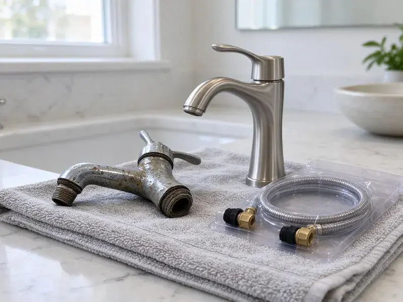

Well Pump Replacement in Torrance, CA
No water from your well? We provide well pump replacement in Torrance, CA, pulling and replacing submersible and jet pumps for private wells.
- Same-Day Well Service
- Upfront Pricing
- Licensed and Insured Plumbers
- Well Depth and Yield Testing

Get Your Water Flowing Again With Well Pump Replacement in Torrance, CA.
Our techs diagnose the problem first, so you only replace what is needed.
Dependable Well Pump Replacement for Torrance, CA Rural Properties
FKM Plumbing specializes in professional well pump replacement for homes and businesses throughout Torrance, CA. A failing well pump can lead to no water, low pressure or inconsistent supply, upending daily life. We diagnose issues quickly and install durable, efficient replacement pumps to restore your water system.
Our expertise includes:
- Years of Southern California Well System Experience
- Submersible and Jet Pump Specialists
- Pressure Tank Integration

Additional Plumbing Replacement Services in Torrance, CA
When repairs are no longer enough, our replacement services in Torrance, CA deliver modern, efficient equipment installed right.


Customers
Why Choose FKM Plumbing for Well Pump Replacement in Torrance, CA?
Choosing the right well pump and installing it properly is crucial for long-term performance. We make sure your new system is well matched to your well and water demands.
- Expert Installation, Our licensed plumbers have broad experience with well systems, for a correct and durable installation every time.
- Quality Pumps, We install only dependable, high-efficiency well pumps designed to provide years of trouble-free service for your home.
- Code Compliance, All our well pump replacements adhere strictly to local Torrance and Southern California plumbing codes for your safety and peace of mind.
Citywide Coverage
From the busy city center to the quieter outskirts, FKM Plumbing provides comprehensive well pump replacement coverage throughout Torrance. Our technicians know the varied well depths and water tables found in Southern California communities.
Experienced Team
Our team is made up of well trained and certified plumbers with extensive experience in well pump systems. They are experts in diagnosing pump issues and performing precise replacements, so your new pump runs the way it should.
Safety-First Approach
Safety is paramount in all well pump replacement projects, especially with electrical components and deep well access. We closely follow all safety protocols, and installations meet or exceed Southern California plumbing and electrical codes.
Trusted Certified Torrance Plumbing Services Professionals
At FKM Plumbing, we take pride in providing certified plumbing services throughout Torrance, CA. Backed by recognized industry credentials, our experienced plumbers combine technical skill with genuine customer care. Whether it is repair, installation, or maintenance, we follow strict safety and quality standards to deliver long-lasting results you can trust.
Call Us Now PHCC Plumbing Contractor Recognition
PHCC Plumbing Contractor Recognition Better Business Bureau (BBB) Accreditation
Better Business Bureau (BBB) Accreditation Angi Certified Pro
Angi Certified Pro ISO 9001 Quality Management Certification
ISO 9001 Quality Management CertificationDurable Well Pump Replacement Services in Torrance, CA
Well Pump Diagnosis and Sizing in Torrance
Accurate diagnosis is essential to effective well pump replacement. We do not just replace a pump, we assess your entire well system, including the well depth, yield and your household's water demand. This lets us correctly size your new pump, preventing premature failure and keeping enough water flowing to your home in Torrance.

Control Box and Pressure Switch Replacement in Torrance, CA
Not every well failure means a bad pump. Failed capacitors, relays or pressure switches can stop the system. We test these components first and replace them if needed. This can save you the cost of pulling the pump. We explain what we find before making recommendations.
Well Pressure Tank Replacement in Torrance
While not the pump itself, a failing pressure tank can look like well pump issues, causing short cycling or inconsistent pressure. Often, when a well pump is replaced, the pressure tank is also nearing the end of its life. FKM Plumbing can replace your well pressure tank alongside your pump. That sets up your entire well water system for longevity and efficiency for homeowners in Torrance.
Well Pump Electrical Troubleshooting and Replacement in Torrance, CA
Many well pump failures come from electrical problems, such as faulty wiring, a tripped breaker or a burned-out motor. Our licensed plumbers are also skilled in electrical diagnostics related to well systems. We identify whether the issue is electrical or mechanical and, if necessary, replace the pump motor or the entire unit. All electrical components are left safe and up to code in Torrance, CA.
Cost-Effective Well Pump Solutions in Torrance, CA
While well pump replacement is a significant investment, we work to provide cost-effective solutions without cutting corners on quality. We offer transparent pricing and discuss pump options and their long-term benefits. That helps you make an informed decision that fits your budget and provides reliable water for years to come in Torrance, CA.
Grundfos Well Pump Replacement in Torrance, CA
Grundfos is a leading brand known for its dependable and energy-efficient well pumps. If your existing Grundfos pump has failed, or if you are looking for a quality replacement, FKM Plumbing installs a full range of Grundfos models. Our expertise means proper selection and installation of the correct Grundfos pump for your well's requirements in Torrance, CA.
Agricultural and Ranch Well Pumps in Torrance
Larger properties may need higher-horsepower pumps for irrigation or livestock. We replace pumps sized for higher flow and deeper wells. Three-phase pumps may require dedicated controls. We coordinate with your schedule to minimize downtime. We also check storage tanks and distribution lines.

Constant Pressure Pump Systems in Torrance
Constant pressure systems use a variable frequency drive to adjust pump speed and keep pressure steady. Grundfos SQE and Franklin SubDrive systems are common choices. They eliminate the pressure swings of traditional systems. They can also cut wear on the pump. We help you decide if the extra cost is worth it.
Well Pump Replacement Near Me in Torrance, CA
When you search for well pump replacement near me in Torrance, CA, you want a local company that understands the challenges of wells in the area. FKM Plumbing is your trusted local expert, providing prompt and efficient service. We are familiar with the common well system setups and water conditions around Torrance.
If you are searching for well pump replacement near me, you need a team with the right equipment and local knowledge. FKM Plumbing serves Torrance and surrounding rural areas. We can respond quickly to no-water emergencies.
FKM Plumbing at a Glance
- Licensed and insured plumbers serving Torrance, CA
- 24/7 emergency service with same-day scheduling
- Clear written estimates, no hidden fees
- 4.8-star rated by 754+ Southern California customers
Torrance Map
Torrance Information
- Population
- 139,224
- Area codes
- 310/424/562
- Service area
- Torrance and communities within 40 miles
- Nearby
- Redondo Beach, Hawthorne, Carson, Compton
Well depth and changing water tables make proper well pump sizing and installation critical for homes in Torrance, CA.
Expert Services
Trust our professionals for reliable FKM Plumbing solutions in Torrance, CA.
Our Specialized Plumbing Services in Torrance, CA
At FKM Plumbing, we provide a complete range of plumbing services across Torrance, CA. From leak detection to full system installations, our team ensures fast, precise, and affordable service for both residential and commercial properties. Explore our core services below:


How Our Well Pump Replacement Service Works in Torrance, CA
Our well pump replacement process is designed for efficiency and clear communication, so you understand every step.
Request a Quote
Contact us at (213) 871-0701 to schedule an appointment. We will gather initial information about your well system and the issues you are experiencing.
On-Site Diagnosis
Our licensed plumber will visit your Torrance property to accurately diagnose the well pump problem. We will inspect the pump, pressure tank and electrical components to confirm the need for replacement.
Pump Selection
Based on your well's depth, water usage and budget, we will recommend the best well pump for your needs. We will provide a clear, upfront estimate for the entire replacement.
Frequently Asked Questions About Well Pump Replacement in Torrance
The cost of well pump replacement in Torrance, CA usually ranges from $1,500 to $3,500, though it can vary. Factors influencing the price include the type of pump, well depth, horsepower and any additional components needed like pressure tanks or wiring upgrades. We provide a detailed, upfront quote after a careful assessment.
FKM Plumbing installs and services a wide range of trusted well pump brands known for their durability and performance. These commonly include Grundfos, Franklin Electric, Goulds Pumps and Sta-Rite. We can recommend the best brand and model to suit your well's needs.
If your pressure tank is old or waterlogged, replacing it at the same time can protect the new pump. A failed tank causes rapid short cycling, which is one of the most common reasons submersible motors burn out early.
In many areas, permits may be required for major plumbing work like well pump replacement, especially if it involves changing the well system's electrical or structural components. FKM Plumbing will help you navigate any permitting in Torrance, CA so your installation is fully compliant with local regulations.
We install Grundfos, Goulds and Franklin Electric pumps. These brands are reliable and widely supported.
Yes, we often replace well pressure tanks alongside well pumps or as a standalone service. A properly functioning pressure tank is crucial for pump longevity and consistent water pressure. We assess your entire well system so all components run together efficiently.
Low pressure, sputtering faucets, no water and high electric bills can point to pump trouble. Frequent cycling is another warning sign.
Common signs include no water from your faucets, weak or inconsistent water pressure, unusual noises from the well or pressure tank area, short cycling where the pump turns on and off frequently, or cloudy or muddy water. If you notice any of these, it is time to call a professional for an inspection.
What People Are Saying About Our Plumbing Experts?

Emily R.
I called FKM Plumbing for plumbing repair, and the technician was fast, polite, and thorough. They explained the problem clearly and fixed it the same day. I will definitely hire them again. Highly recommended!
Plumbing Repair · Inglewood, CA
Daniel K.
A pipe burst at 11 pm and they actually answered. The plumber showed up within the hour, shut everything down, and had us back to normal the next morning. Could not ask for more.
Emergency Plumbing · Torrance, CA
Robert G.
The trenchless sewer replacement saved our front yard. They walked us through the camera inspection footage first so we knew exactly what we were paying for.
Sewer Line Replacement · Redondo Beach, CAJames P.
Our commercial plumbing system had a leak under the sink, and FKM Plumbing handled it professionally. The plumbers arrived quickly and restored everything without disruption to our customers.
Commercial Plumbing · Compton, CA
Patricia H.
We had a slab leak that two other companies could not find. FKM Plumbing located it in under an hour, explained our options, and the price matched the quote to the dollar.
Slab Leak Repair · Carson, CA
Mark T.
When our office needed drain cleaning, FKM Plumbing provided quick, reliable service. The plumber arrived on time and made sure every drain flowed perfectly before leaving. Very satisfied.
Drain Cleaning · Lynwood, CA